Restaurant · Traiteur · Mons
Isola Bella
La cuisine d'un chef sicilien.
Un restaurant italien familial : pâtes maison, pizzas, desserts de tradition, et une ardoise de suggestions qui change avec les produits frais.
4,5 sur 5 · 114 avis Google
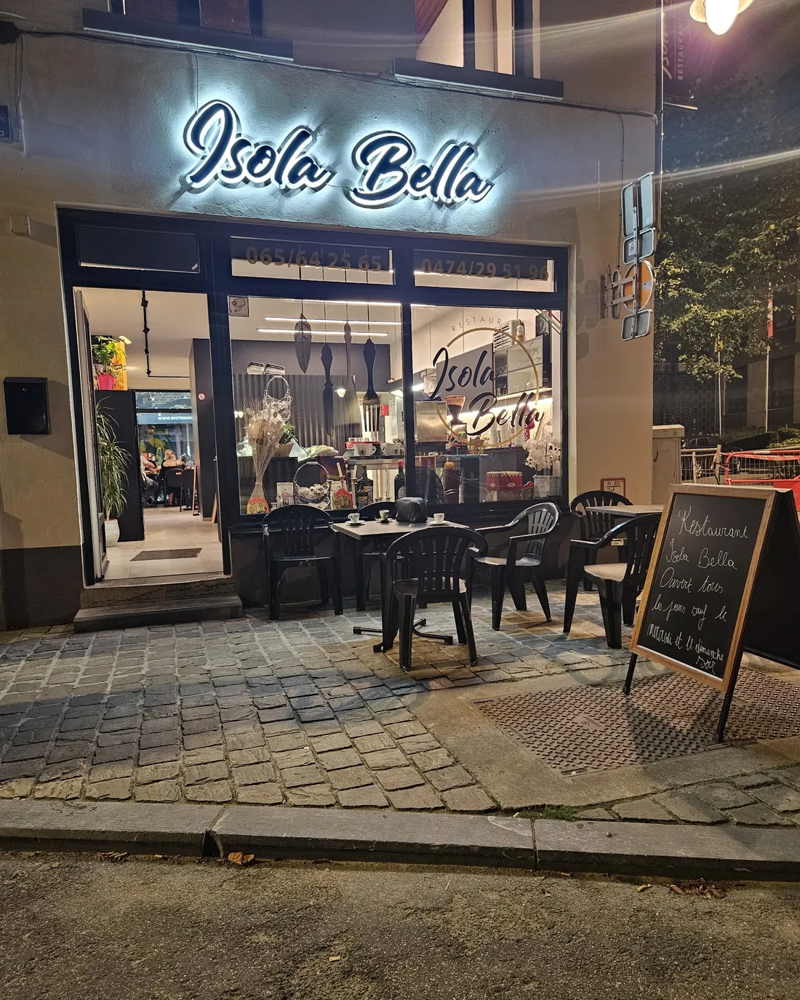
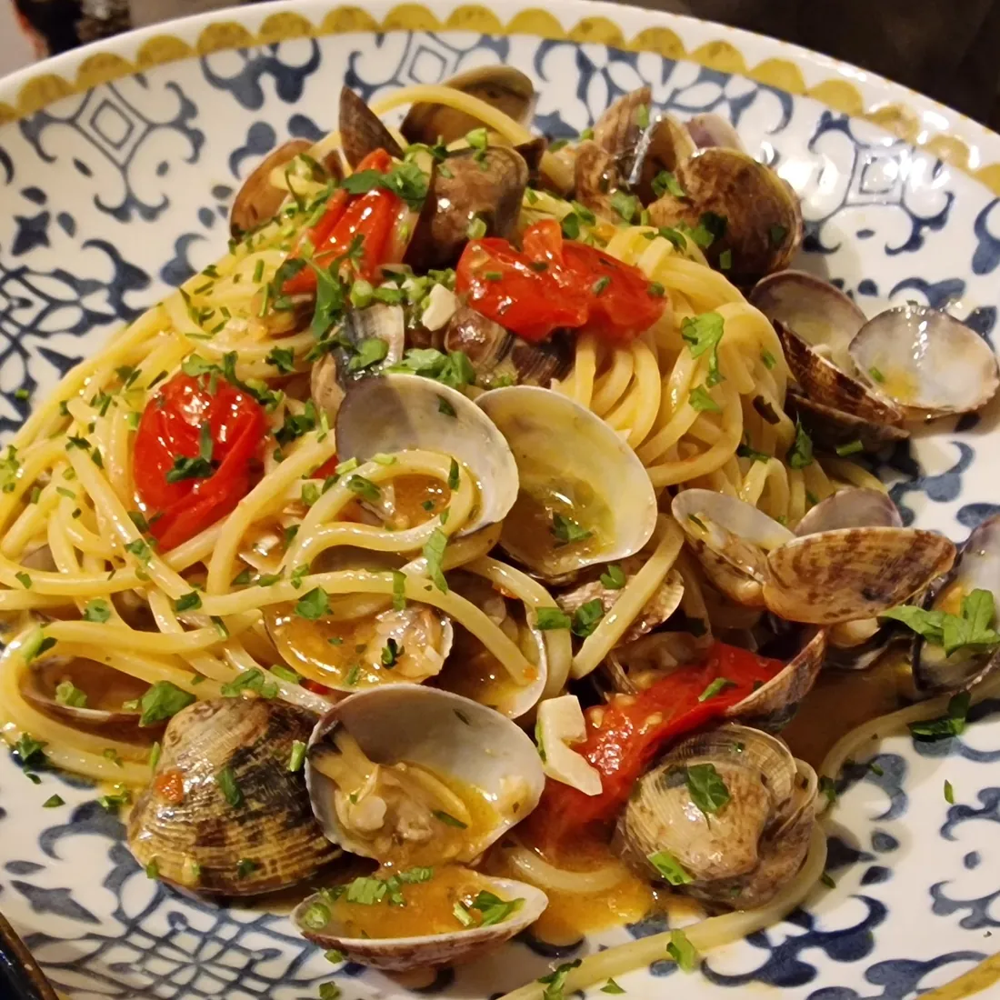
Pâtes maisonSpaghetti, palourdesPas de carte figée
L'ardoise suit le marché
Ici, une dizaine de suggestions au tableau, qui changent selon les produits frais et la saison. Spécialités siciliennes, pâtes maison, pizzas, desserts de tradition : que vous soyez viande, poisson ou végé, il y a votre assiette.
« […] Ils fonctionnent avec une carte d’une dizaine de suggestions, ce qui pour moi est gage de produits de qualités et frais. La carte change régulièrement et tout le monde peut y trouver son compte que vous soyez viande, végé ou poisson. […] »Madila S., avis Google ★★★★★
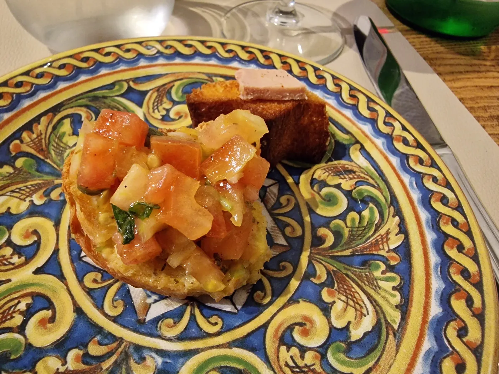
Suggestions
- Spécialités siciliennes
- Pâtes maison
- Pizzas
- Desserts traditionnels
viande · poisson · végé
selon le marché
Dans l'assiette
Servi sur la majolique
Des plats photographiés par les clients, dans la vaisselle peinte de la maison. Ce qui est servi le jour venu, c'est l'ardoise qui le dit.
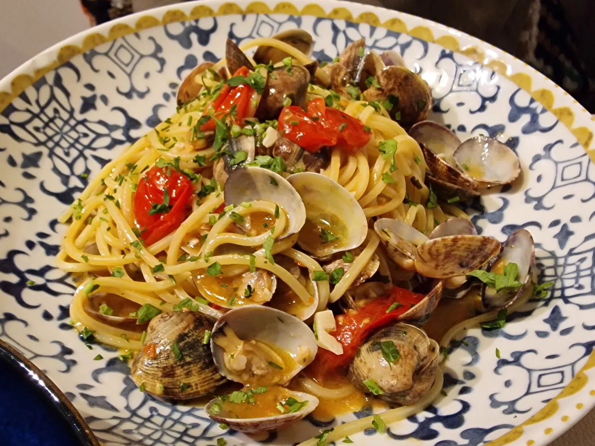
La pasta pâtes maison
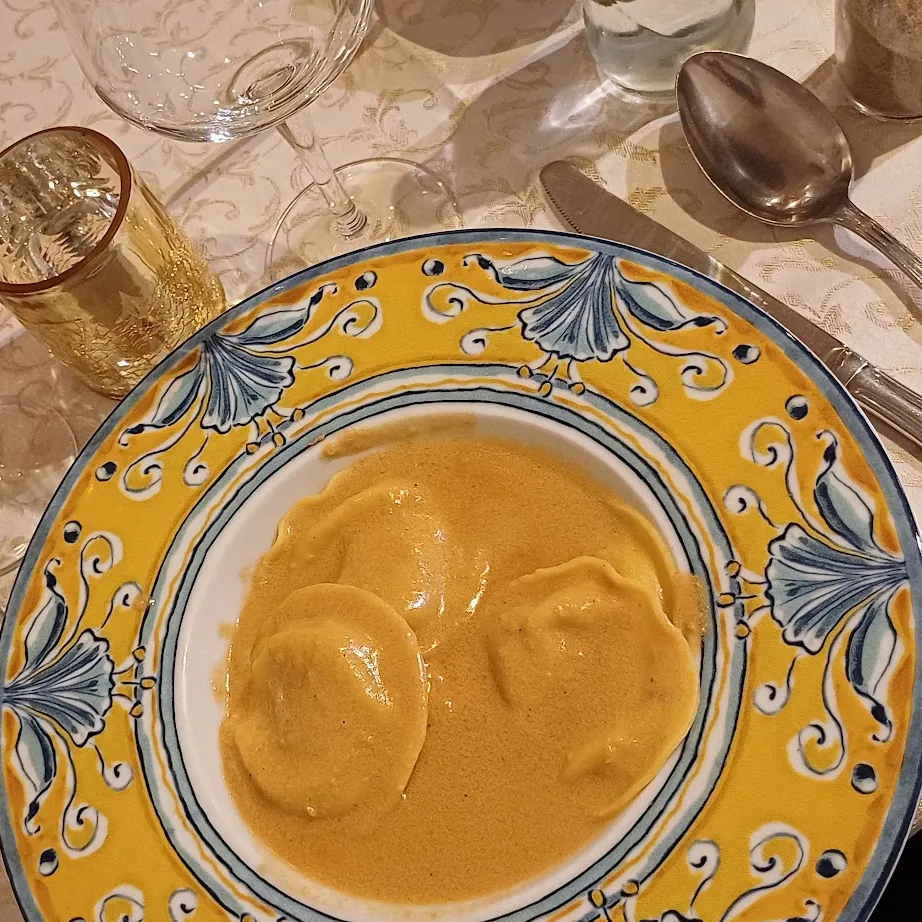
Raviolis nappésRaviolis dans une sauce onctueuse, assiette jaune peinte.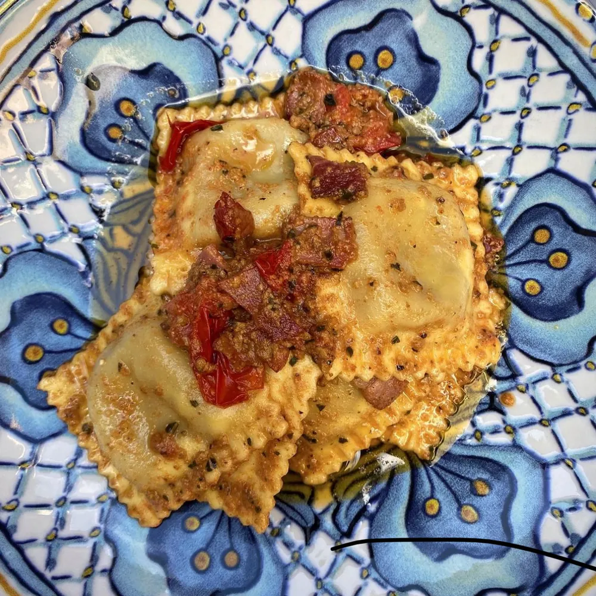
Raviolis à la tomateRaviolis dorés, garniture tomatée, sur faïence bleue.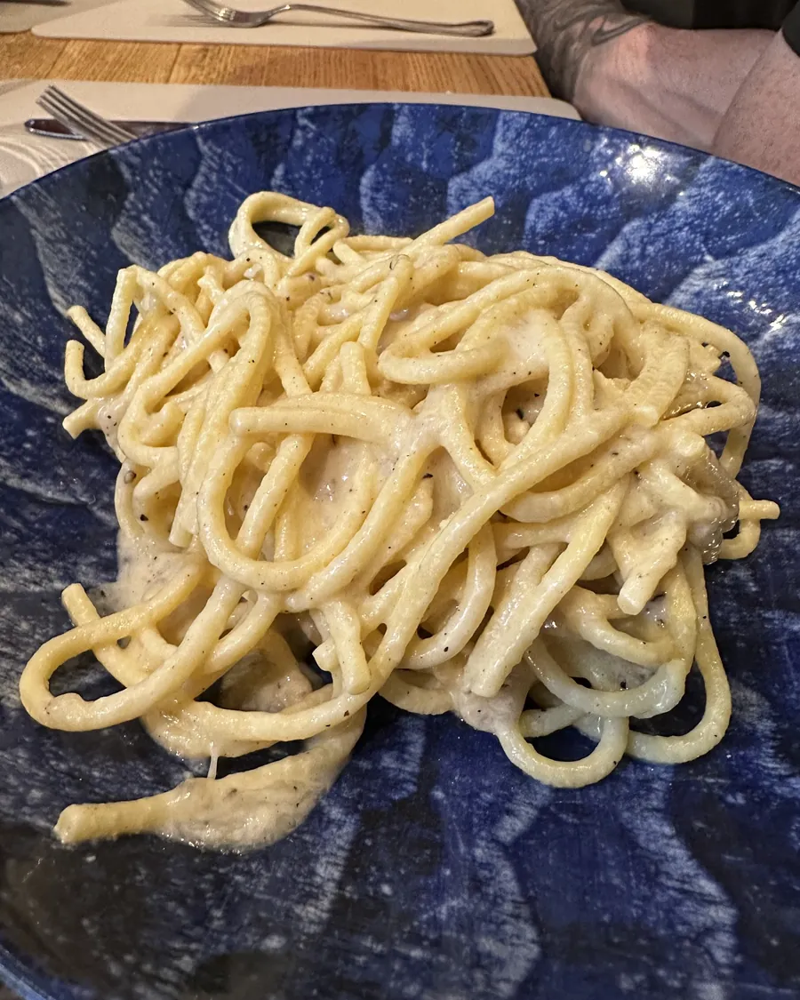
Spaghetti crémeuxSpaghetti épais, nappés, servis en nid.« […] Tout fait maison , tout parfait avec le sourire […] »Mat D., avis Google ★★★★★
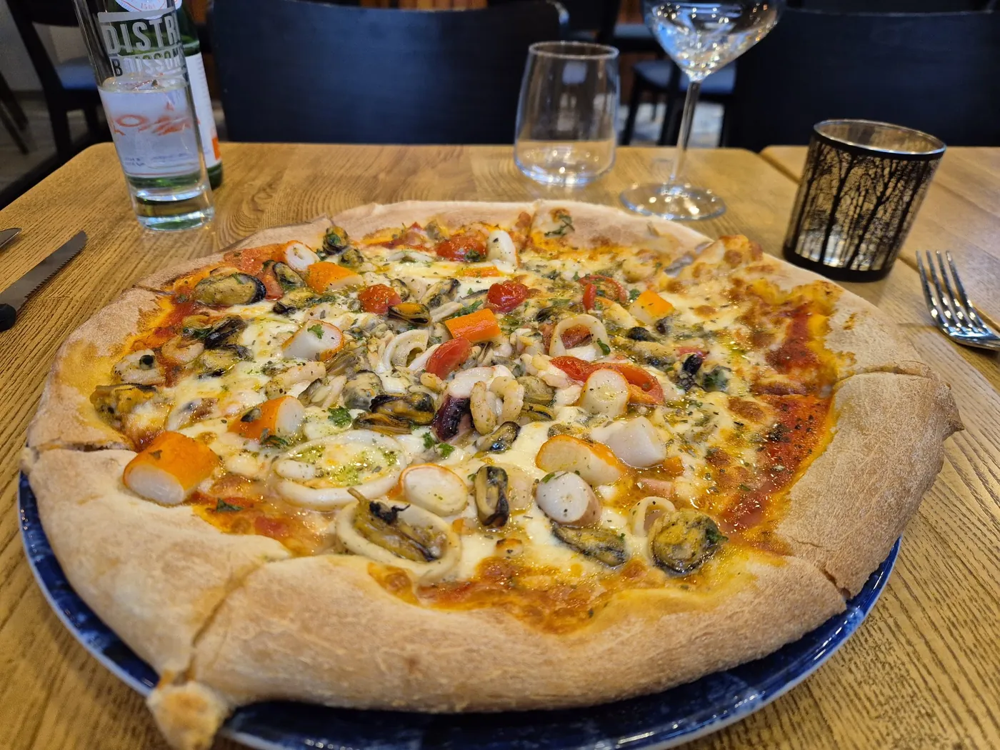
Le pizze les pizzas
Aux fruits de merMoules et fruits de mer, croûte bien levée.
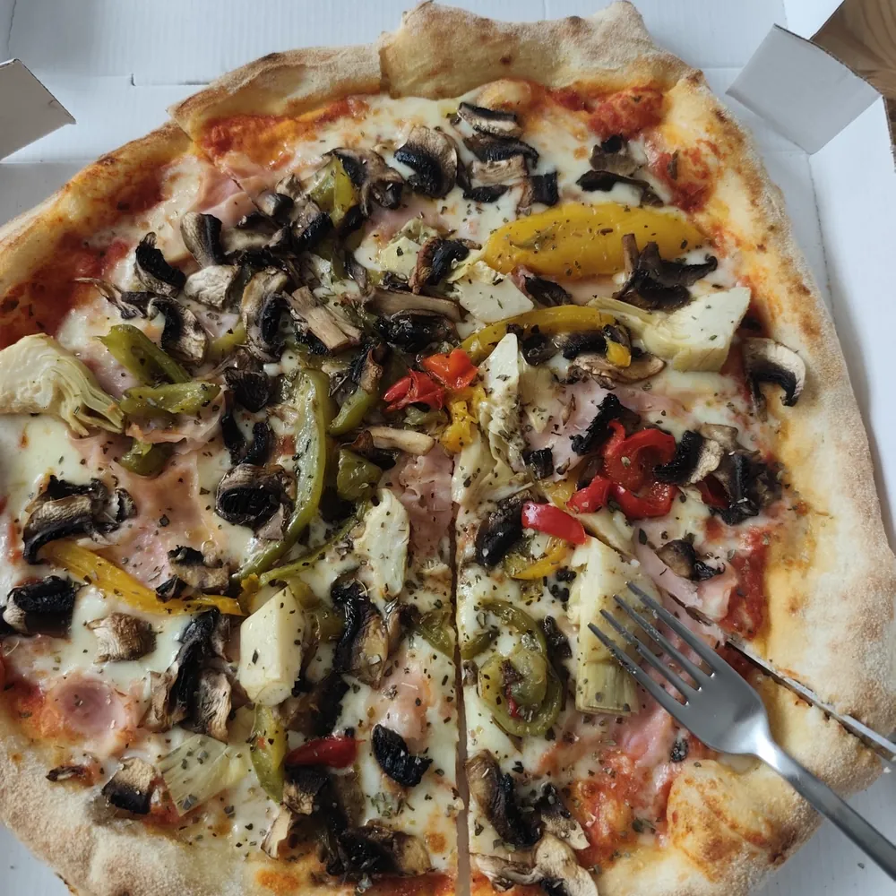
Champignons et poivronsPâte fine, bords gonflés, garniture généreuse.« […] J'ai rarement mangé de si bonnes Pizzas. […] »JM D., avis Google ★★★★★
« […] La pâte était parfaite, les ingrédients savoureux… un vrai régal. […] »Elodie D., avis Google ★★★★★
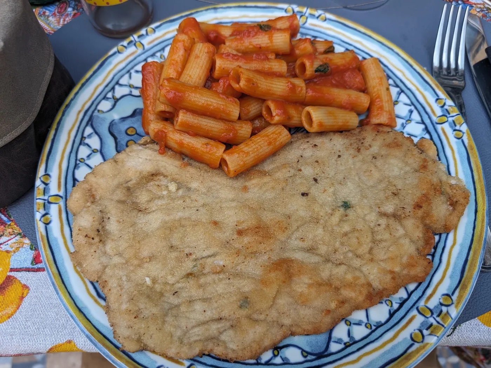
Secondi e dolci et le reste
Escalope et rigatoniEscalope panée, rigatoni à la sauce tomate.
BruschettaTomates en dés, basilic, pain grillé.
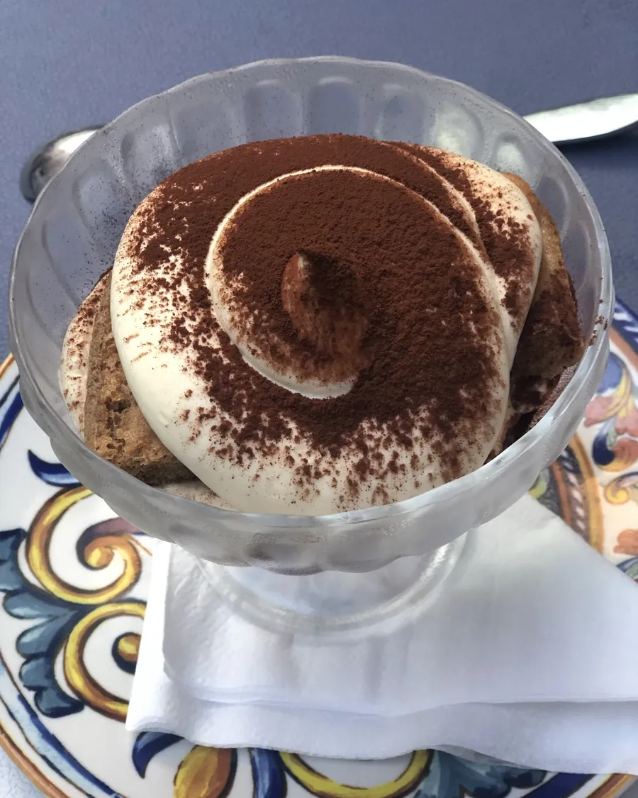
Dessert en coupeCrème légère et voile de cacao.« […] On sent que les produits sont frais et bien choisis. […] »celine P., avis Google ★★★★★
Envie de savoir ce qu'il y a à l'ardoise aujourd'hui ? 065 64 25 65
En ligne, en une minute
Réserver une table
Choisissez le jour, l'heure et le nombre de couverts. Les créneaux proposés restent dans les heures d'ouverture publiées : l'équipe vous confirme la table.
Restaurant · Traiteur
Le chef cuisine aussi pour vos fêtes
Isola Bella n'est pas qu'une salle : c'est écrit sur l'enseigne, « Restaurant · Traiteur ». La cuisine du chef sicilien se commande aussi pour vos événements, et se prend à emporter.
Pour tous types d'événementsAnniversaire, fête de famille, réception : parlez-en au chef.
Plats à emporterLa cuisine de la maison, chez vous.
La cuisine du chef sicilienPâtes maison, spécialités siciliennes, desserts de tradition.
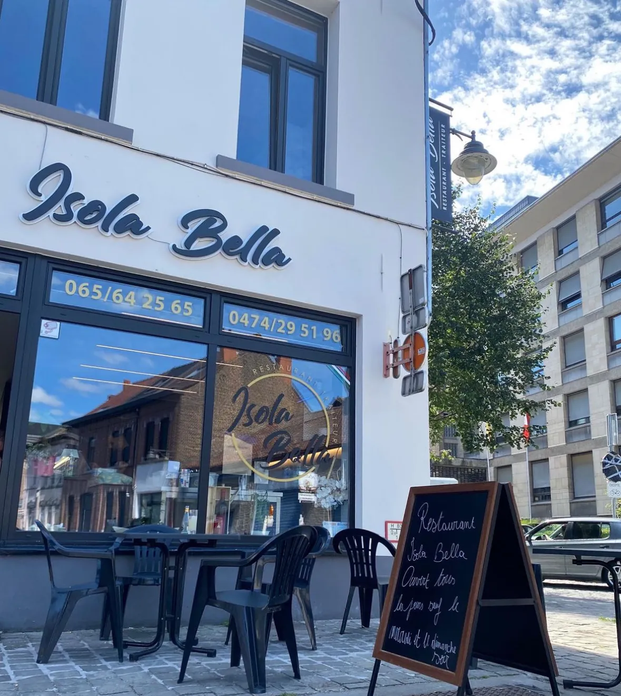
Restaurant · TraiteurC'est écrit sur la bannière, à l'angle de la façade.
Avis des clients
Venus par hasard, ils reviendront
Sur place
Une terrasse chauffée, même en hiver
La terrasse est couverte et chauffée : on y mange dehors toute l'année. Le soir, un grand parking gratuit ouvre à deux pas, dès 18 h.
Terrasse couverte et chaufféeDehors, même l'hiver
Grand parking gratuitAccessible dès 18 h
Accès PMREntrée accessible en fauteuil
Animaux admisVos compagnons aussi
Si parla italianoAccueil en français et en italien
Wi-FiPour les clients
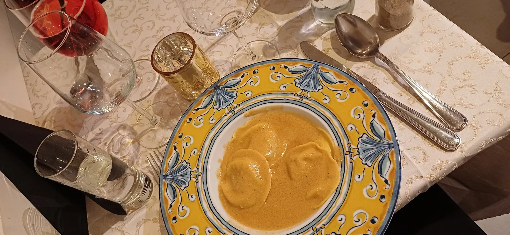
Horaires et accès
Ouvert six jours sur sept
Fermé le mercredi
| lundi | 11 h – 23 h |
|---|---|
| mardi | 11 h – 23 h |
| mercredi | fermé |
| jeudi | 11 h – 23 h |
| vendredi | 11 h – 23 h |
| samedi | 11 h – 23 h |
| dimanche | 7 h 30 – 16 h |
L'ardoise devant la porte le dit à sa façon : « Ouvert tous les jours sauf le mercredi et le dimanche soir »
. Un doute un jour férié ? Appelez.
7000 Mons · terrasse sur les pavés
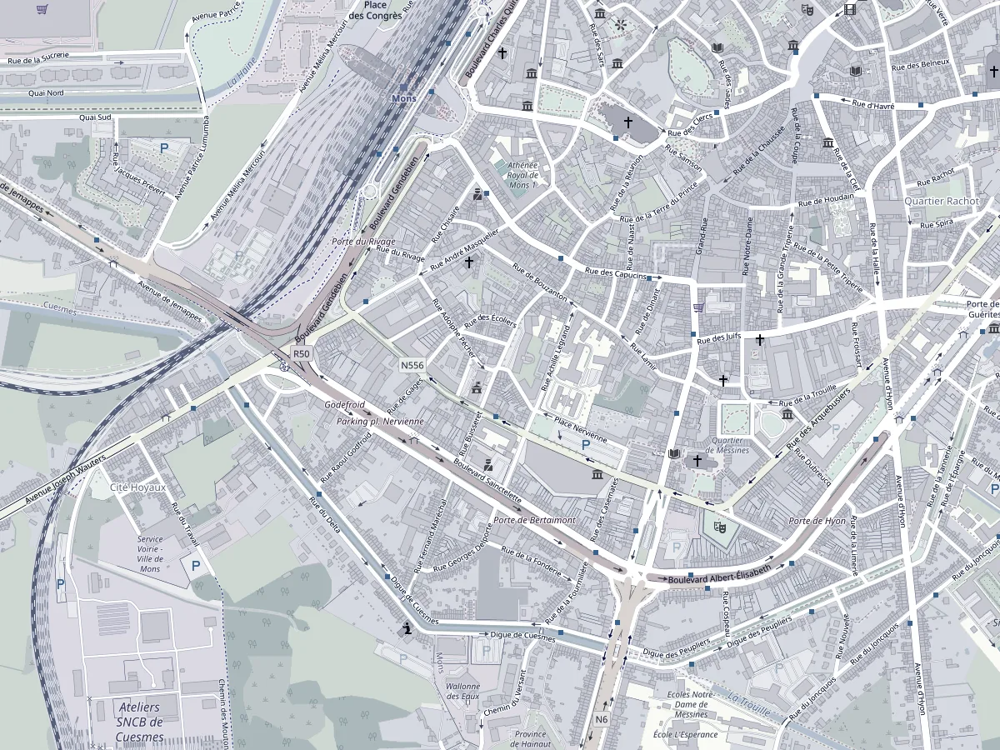
Itinéraire © OpenStreetMap